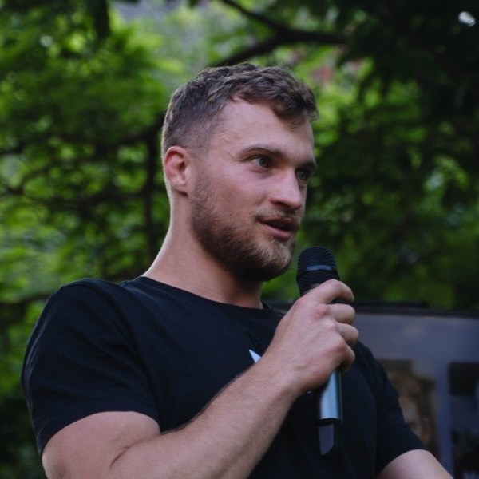

Founders raise blind
You rewrite the deck eleven times on vibes. Nobody tells you the real objection — that your CAC payback is 19 months and your TAM slide double-counts. You find out after the sixth "we'll pass, but keep us posted."
FounderOS runs your startup through a network of specialised AI agents that think like a venture partnership — market, financials, product, competition, growth. In minutes you get an Investment Readiness Report, a VC-style score, and the exact list of things to fix before you raise.
Free readiness snapshot · No credit card · Your documents are never used for training
Trusted by founders, funds and accelerator programmes
The average seed round takes five months and eighty conversations. Most of those conversations fail for reasons a partner could have named in ten minutes — and never told you.
You rewrite the deck eleven times on vibes. Nobody tells you the real objection — that your CAC payback is 19 months and your TAM slide double-counts. You find out after the sixth "we'll pass, but keep us posted."
A single seed fund sees 2,000+ decks a year and writes maybe fifteen cheques. Screening is manual, inconsistent between partners, and biased toward whoever writes the smoothest narrative.
Accelerators and university funds track cohorts in spreadsheets. There's no consistent measure of whether a company actually got more fundable over twelve weeks — only whether the founder sounded more confident.
Six specialised agents examine your company independently — each with its own tools, data sources and evaluation rubric — then argue their way to a single recommendation, exactly the way a partnership does on a Monday morning.
Sizes the opportunity bottom-up, validates TAM/SAM/SOM claims against third-party data, and tracks the regulatory and macro shifts moving your category.
Rebuilds your model from first principles — burn, runway, gross margin, CAC payback, LTV/CAC, magic number — and flags every assumption that won't survive diligence.
Assesses differentiation, defensibility and roadmap feasibility against the team you actually have — and separates a real moat from a feature list.
Maps every credible competitor and adjacent entrant, tracks their funding and hiring, and positions you honestly on the axes buyers actually care about.
Audits acquisition channels, funnel conversion, retention curves and sales efficiency to judge whether growth is repeatable or one lucky quarter.
Reads every other agent's findings, weighs the disagreements, and writes the final memo — conviction level, key risks, and the terms it would defend.
Every run produces a structured Investment Readiness Report — score, strengths, risks, valuation benchmarks, investor-fit list and a full narrative memo you can forward as-is.
No consultants, no eight-week engagement. Connect what you already have and the analysis starts immediately.
Drop in your deck, financial model, website, demo video, metrics export and cap table. Everything is encrypted and scoped to your workspace alone.
Six agents work simultaneously across market, financial, product, competitive and growth dimensions — typically finishing inside four minutes.
Get your Founder Score, ranked strengths and risks, valuation benchmarks against comparable rounds, and a prioritised list of fixes.
Work the milestones, watch the score move, and when you cross the threshold get introduced to investors whose thesis genuinely fits.
Most diagnostic tools give you a static grade and a PDF. The Founder Score is live — it recalculates every time you ship a milestone, close a customer, improve retention or add a key hire.
Founders use FounderOS to get ready. Investors use the same structured output to decide faster. That shared language is the whole point.
Rewrite your deck section by section with an AI mentor trained on how partners actually read slides.
Every assumption challenged, every sensitivity run, before an associate does it for you.
Practise a partner grilling — including the questions you're hoping nobody asks.
Ranked by thesis fit, stage, cheque size, geography and recent deployment activity.
A living roadmap of what to prove next, with the score impact of each item estimated up front.
Data room checklist, one-pager, executive summary and update emails, generated from your live data.
Every inbound deck returned as the same structured report, so partners compare like with like.
Rank a pipeline on any dimension — economics, growth quality, team, market timing.
Track record, domain depth and team composition assessed against the problem being solved.
First-pass diligence packs drafted in minutes, with every claim linked to its source document.
Strong fundamentals wrapped in a weak deck get flagged instead of filtered out.
Track readiness across existing holdings and spot which companies are drifting before the board deck says so.
See every company in the programme on one readiness axis, updated weekly.
Quantify what twelve weeks of programming actually changed, company by company.
Know which companies are ready to pitch and which need another six weeks — before you print the programme.
Route the right mentor to the right gap, based on the weakest scored dimension.
Generate LP, university or government reports with defensible, consistent metrics.
Screen applications to your next cohort with the same rubric you'll graduate them against.
Figures reflect aggregated platform activity across participating startups and funds.
The report told us our CAC payback was the deal-breaker three weeks before a fund told us the same thing. We fixed the pricing tier, re-ran it, and closed at a valuation we wouldn't have asked for in March.
We see roughly two thousand decks a year. FounderOS gives me a consistent first read on all of them, so partner time goes to the twenty that deserve it. It hasn't replaced judgement — it's replaced the part before judgement.
For the first time we can show our university board what twelve weeks of programming actually did. Not testimonials — a measured delta across eighteen companies.

"I was told no eleven times before anyone explained why. The twelfth investor spent four minutes on my unit economics and told me something my own board hadn't — and I only got that conversation by accident.
FounderOS exists so no founder has to rely on that accident. Know the objections before the meeting, and the meeting becomes a conversation instead of an audition."
Yes. Documents are encrypted in transit and at rest, isolated to your workspace, and never used to train models — ours or anyone else's. You control who sees what, you can revoke access at any time, and you can delete your workspace and all derived artefacts permanently from settings.
The score is a structured, benchmarked opinion — not a prediction of outcome. Its value is consistency: every company is assessed against the same stage-adjusted rubric, and every claim in the report links back to the document or data point that produced it. Treat it the way you'd treat a rigorous associate's first memo: a strong starting position that a human should still argue with.
No. Pre-revenue and pre-product companies are scored against a pre-seed rubric that weights founder–market fit, problem evidence and speed of learning far more heavily than metrics. You'll get a readiness path rather than a valuation benchmark.
Only if you choose to share it. Nothing is visible to any investor on the platform until you publish a snapshot and pick who receives it. Investor matching surfaces funds to you first — the introduction is always founder-initiated.
Your first readiness snapshot is free. Paid founder plans start at $79/month for full multi-agent reports, coaching and investor matching. Funds, accelerators and institutions run on enterprise licences priced by portfolio size — see pricing.
No, and it isn't meant to. FounderOS makes the conversation you eventually have a better one — you walk in already knowing the three objections, with the answers prepared. Capital still comes from people.
Upload your deck and get a free readiness snapshot in under four minutes. No sales call required to see your score.
Free tier · No credit card · SOC 2 controls in place